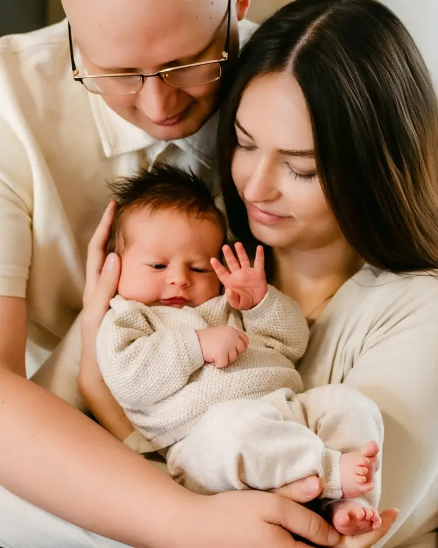
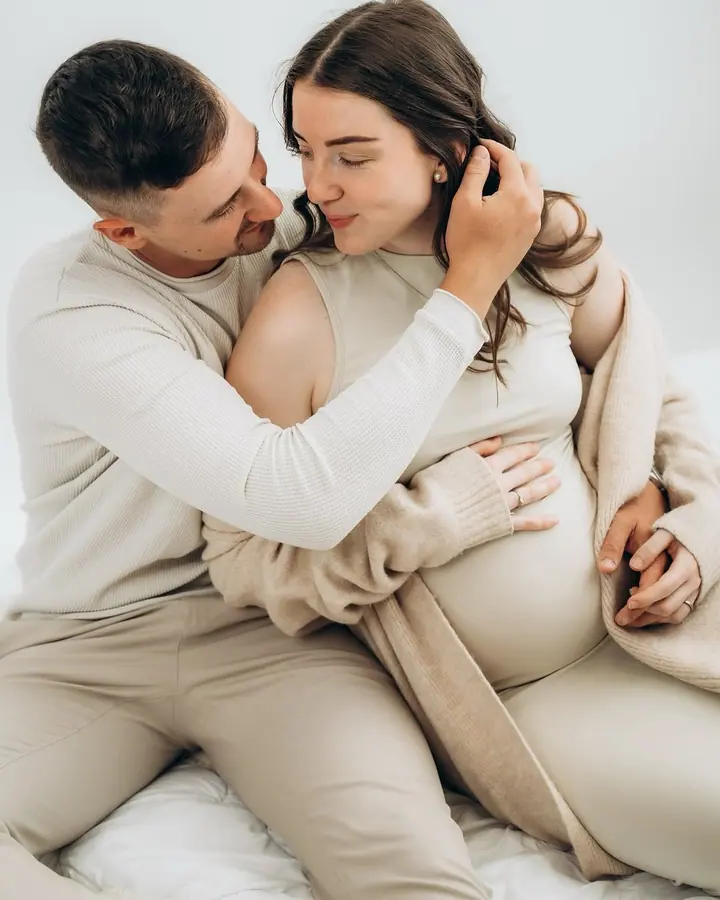
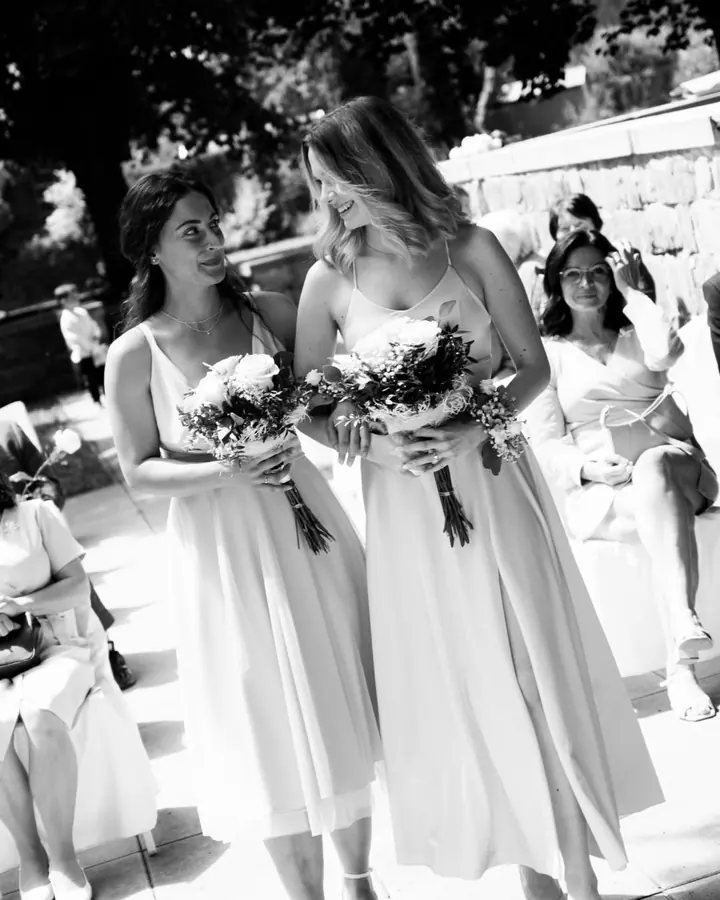

Novorozenecké focení
Miminka fotím přirozeně ve svém ateliéru v Ostravě, s vámi i samostatně, bez umělých póz a bez „zvířátek“. Ideální je přijít do 14 dnů po porodu, ale ráda vyfotím i starší miminko.

Jmenuji se Hana Smutná a ve svém ateliéru v Ostravě fotím novorozence, těhotenská bříška i celé rodiny. Za svatebčany pak jezdím po celé republice a místo strojeného póz…
Rezervovat termínFotím ve vlastním ateliéru ve Slezské Ostravě. Je zařízený jako útulný byt s terasou, takže tu na vás čeká káva, čaj, domácí zázemí a ateliérový šatník. Pokud přijedete z daleka, můžete se v ateliéru i ubytovat a spojit focení s prohlídkou Ostravy.


Miminka nefotím zabalená do ruličky ani v nepřirozených polohách. Chci je zachytit taková, jaká opravdu jsou, s láskou a něhou, v náruči rodičů a sourozenců. V ateliéru mám ráda minimalismus, hru světel a stínů a černobílé fotky, které se neokoukají.
Sama mám doma tři děti, takže mě neposední prcci nerozhodí. Na svatbách vás provedu přirozeným ne-pózováním a pokud chcete i video, natočí ho můj brácha Martin z MB Visuals.
Co fotím
Miminka fotím přirozeně ve svém ateliéru v Ostravě, s vámi i samostatně, bez umělých póz a bez „zvířátek“. Ideální je přijít do 14 dnů po porodu, ale ráda vyfotím i starší miminko.
V ateliéru minimalisticky, se hrou světel a stínů, nebo venku v přírodě kolem Ostravy. Vzniknou romantické a intimní fotky této jedinečné chvíle.
Jen obřad, šest hodin, nebo celý den. Pomůžu vám s přirozeným ne-pózováním a když budete chtít, svatební film k fotkám natočí můj brácha.
Letní den v parku, podzimní procházka lesem, focení u vás doma nebo v ateliéru. Neposedné děti nevadí, sama mám doma tři.
Postup
Vyplňte krátký formulář na webu a já se vám brzy ozvu. Ráda poradím s výběrem focení i místa.
U miminek je ideální doba do 14 dnů po porodu. Na svatbu se můžeme potkat i na předsvatebním focení.
Čas přizpůsobíme vám i miminku, pomůžu vám s pózováním a k dispozici je šatník a oblečky pro miminko.
Fotky k úpravě si vybíráte sami z náhledové galerie. U newborn focení je máte do 3 týdnů, ze svatby první fotky do 2 dnů.
Otázky
Ideálně do prvních 14 dnů po narození, kdy jsou miminka spavější. Pokud jste to nestihli, nevadí, ráda vyfotím i starší miminko.
Newborn focení začíná na 4 000 Kč za 10 upravených fotek a 1,5 hodiny focení. Ateliérové focení stojí 3 500 Kč, focení venku 4 000 Kč. Balíček si můžete vybrat až podle náhledové galerie.
V ateliéru se hodí jednoduché oblečení bez nápisů, šaty, košile nebo oblek. Když nic vhodného nemáte, můžete si zapůjčit věci z ateliérového šatníku a pro miminko pletené a háčkované oblečky.
Ano, kromě Ostravy a Beskyd fotím třeba v Olomouci, Brně nebo Praze. Fotit můžu jen obřad, šest hodin nebo celý den, případně i s videem.